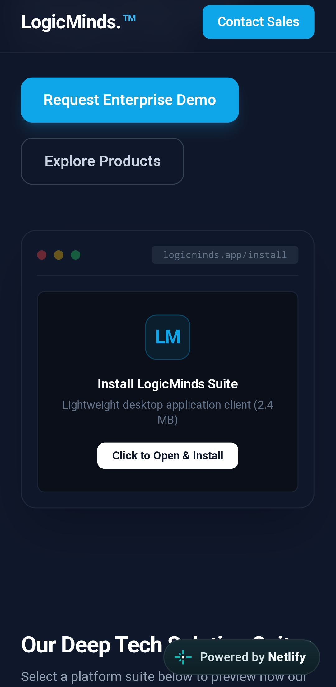
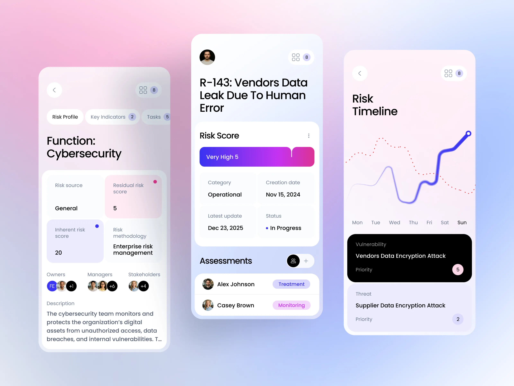
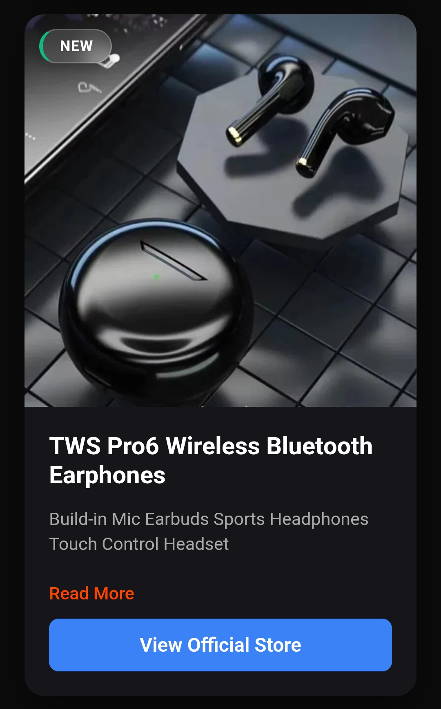
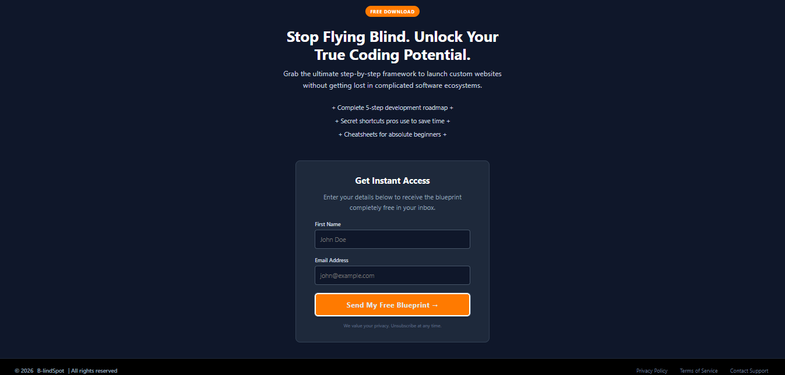

HELLO, MY NAME IS
Customer Success Strategist and a Freelancer
HIGHLIGHTS




Curated Looks
We craft data-driven acquisition funnels designed to minimize user churn, maximize trial-to-paid conversions, and consistently drive sustainable Monthly Recurring Revenue (MRR) expansion.
Read Full Article →From dropshipping storefronts to complex marketing funnels, we run deep behavioral analytics to isolate drop-off zones and transform passive traffic into loyal buyers.
Read Full Article →A sales funnel is a structured marketing framework that maps out a potential customer's journey from their first interaction with a brand to the final purchase. It is called a "funnel" because it is wide at the top—where many broad prospects discover the brand—and gradually narrows as uninterested parties drop off, leaving a much smaller group of qualified, paying buyers at the bottom.
Read Full Article →Driving traffic is no longer about raw volume; it is about capturing high-intent users who want what you are offering immediately.
Search Intent Alignment
Authoritative Link Building
Cross-Channel Paid Amplification
Read Full Article →Support Hub
I specialize in constructing conversion-optimized frontend interfaces, including Progressive Web Apps (PWAs), high-fidelity storefront pre-sales landing pages, and clean blogging layouts. Additionally, I deliver deployment-ready customer support architectures and custom automation workflows to minimize user friction and reduce churn.
Our portfolio features interactive production prototypes and case studies for systems like LogicMinds, Trusswork, and TUVEES BuyHub. Each entry showcases clean applications of automated corporate dashboards, interdepartmental hubs, and visually engaging e-commerce storefronts.
New operational blueprints and conversion strategies are published directly to our featured stream on a rolling basis. These updates dynamically populate our automated jump-to navigation menu, providing immediate access to technical insights on funnel mechanics and behavioral optimization metrics.
Yes, I partner with software founders, digital brands, and high-growth ventures to streamline customer service operations and fix leaky sales funnels. Click the "Let's Talk" button in the navbar to open the direct communication log portal and discuss your project.